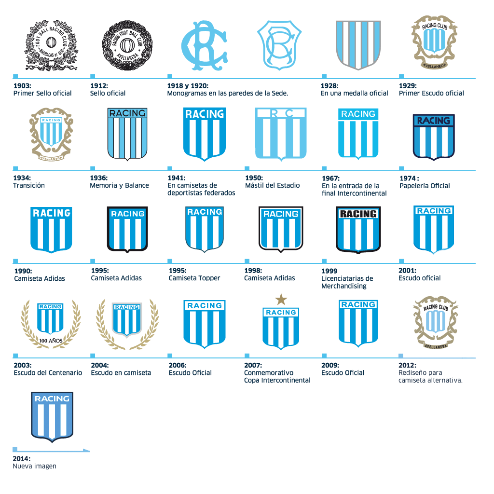
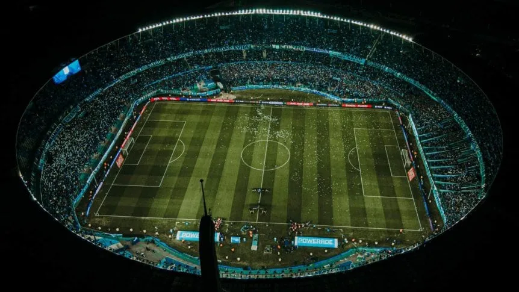
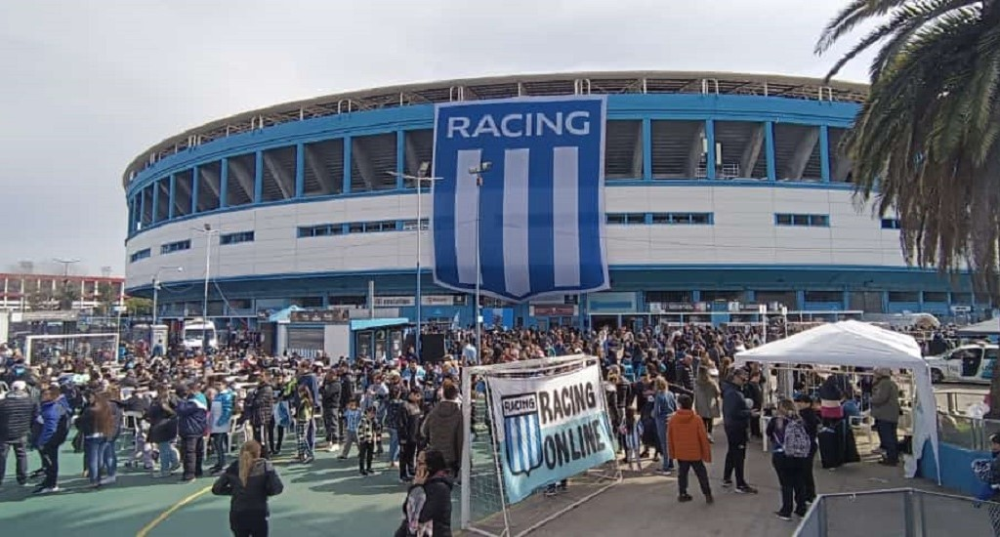

Diego Milito
Delantero surgido de Racing, muy recordado por su identificación con el club y por su regreso en 2014.
El Primer Grande
Una historia llena de pasión, identidad y grandes momentos.
Conocer el clubRacing Club es una institución deportiva argentina fundada en Avellaneda, provincia de Buenos Aires. Es conocido popularmente como La Academia y sus colores tradicionales son el celeste y el blanco. Su historia se construyó con títulos, grandes equipos y el acompañamiento de sus hinchas.
Algunas imágenes del estadio y de su gente.
Racing Club fue fundado el 25 de marzo de 1903 en la ciudad de Avellaneda. Con el paso del tiempo se convirtió en uno de los clubes más reconocidos del fútbol argentino.
Recibió el apodo de La Academia por el nivel de juego de sus equipos y por su protagonismo en los primeros años del fútbol nacional. Entre 1913 y 1919 consiguió siete campeonatos de liga consecutivos.
En 1967 obtuvo la Copa Libertadores y luego ganó la Copa Intercontinental, convirtiéndose en el primer equipo argentino en conquistar ese trofeo.

Escudos que representan distintas etapas de la institución.

El estadio de Racing se llama Presidente Perón, aunque es conocido popularmente como el Cilindro de Avellaneda. Está ubicado en Avellaneda, provincia de Buenos Aires.
Fue inaugurado en 1950 y es uno de los lugares más representativos de la identidad del club. Allí juega Racing sus partidos como local y miles de hinchas acompañan al equipo.
Algunos futbolistas que dejaron una huella importante en la historia de Racing:
Delantero surgido de Racing, muy recordado por su identificación con el club y por su regreso en 2014.
Figura destacada como jugador y entrenador. Dirigió al equipo campeón de la Copa Libertadores de 1967.
Delantero y referente muy querido por los hinchas, reconocido por su capacidad goleadora y liderazgo.
Racing se consagró campeón de América.
El club obtuvo el título mundial frente al Celtic.
Una etapa histórica que dio origen al apodo La Academia.


En la tienda oficial se pueden encontrar productos y ropa relacionados con Racing Club.
Visitar LocademiaRacing utiliza diferentes sistemas informáticos para administrar sus actividades. Como cualquier institución, debe proteger sus computadoras y sistemas contra virus y malware.
Podrían infectar las computadoras utilizadas por el personal del club y afectar los archivos o programas.
Podrían esconder programas maliciosos que intenten acceder a información del club sin autorización.
Podría bloquear archivos importantes, como documentos administrativos, e impedir que el personal pueda utilizarlos.
Racing cuenta con socios e hinchas que pueden proporcionar información personal al realizar trámites o utilizar servicios del club.
Algunos datos que necesitan protección son:
Personas desconocidas podrían utilizarlos para realizar estafas, suplantar identidades o enviar mensajes fraudulentos.